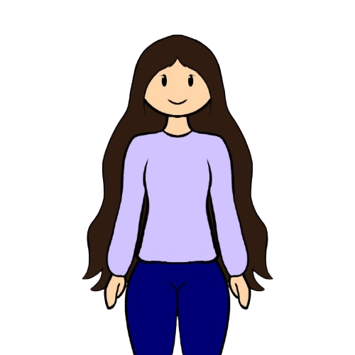

Eduarda Mary Magalhães Nogueira
Perfil
Estudante de Análise e Desenvolvimento de Sistemas em busca de oportunidade de estágio na área de Tecnologia da Informação, com interesse em desenvolvimento de sistemas, backend e aprendizado contínuo.
Principais Competências
- HTML
- JavaScript
- Node
- SQL
- CSS
Formação Acadêmica
Análise e Desenvolvimento de Sistemas
Instituto Federal de São Paulo (IFSP) – Campus Boituva
Técnico em Informática
ETEC Bartolomeu Bueno da Silva
Experiência Acadêmica / Projetos
Sistema Web para Ciclo Menstrual
Atuação principal no backend com Node.js e banco de dados, além de participação no frontend.
Contato
Telefone: 4002-8922